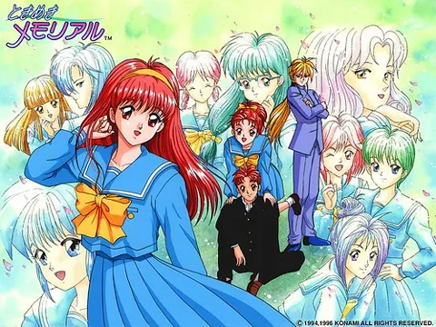
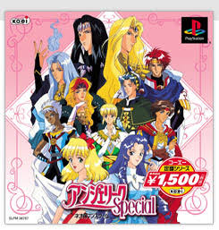
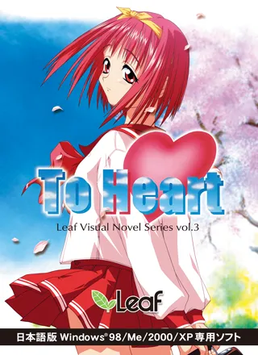

1. 『두근두근 메모리얼』 (1994)
시뮬레이션과 연애의 결합
- 일정 관리 시스템을 연애 서사와 결합.
- 선택에 따라 캐릭터와의 관계가 변하는 상호작용 기틀 마련.

2. 『안젤리크』 (1994)
여성향 게임의 개척
- 로맨스와 육성 시뮬레이션을 결합.
- 여성향 연애 게임(오토메 게임)의 기념비적 출발점이 됨.
⬇ 기획적 도전 (제작자 증언)

3. 『ToHeart (투하트)』 (1997)
일상과 개별 서사의 매력
- 일상의 묘사로 캐릭터에 대한 애착 극대화.
- [장르적 계승] "청춘 학원물로서 『두근두근 메모리얼』에 도전한다"는 구상에서 출발.
게임 매체의 핵심: 상호작용 (Interaction)
플레이어
선택과 조작
⬌
개별화된 서사
캐릭터
반응과 관계 변화